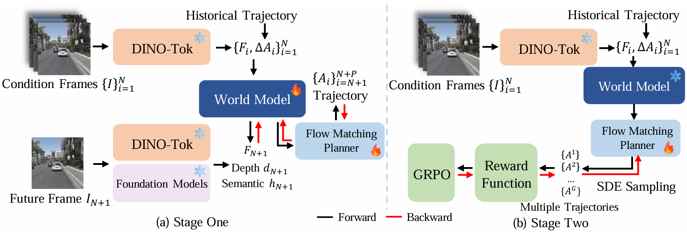

Summary
在 perception-free driving world model 上补足”未来推理”：除预测下一帧图像外，还要求模型从推断出的未来表征中解码未来 metric depth 与 SAM3 文本对齐语义特征图，用 foundation model 伪标签监督；再用 flow matching GRPO 微调轨迹规划器。backbone 为 Qwen3-VL 4B 语言部分（总参数 6.7B），输入仅为前视视频与相对运动。NAVSIMv1 navtest 90.4 PDMS，NAVSIMv2 navtest 88.9 EPDMS，navhard Stage 1 36.1 EPDMS，三项均为 perception-free 方法中最高。
Problem & Motivation
- perception-planning 范式依赖人工标注（bbox、semantic segmentation、occupancy、VQA）来构建感知能力，标注成本使 data scaling law 难以套用到驾驶模型上。
- perception-free 方法（World4Drive、Epona、DriveVLA-W0、DriveLaW、PWM）去掉了标注，但目前只用下一帧图像预测作为未来推理的监督信号。原始图像中的规划相关信息高度纠缠，仅靠图像重建学到的未来表征继承这种模糊性，场景理解不足。
- 作者的主张：人类驾驶决策依赖对前方障碍物距离（3D geometry）与语义（object semantics）的预判，因此未来推理也应显式包含这两个模态。已有做法把深度模型输出作为额外输入（VGGDrive、World4Drive），既增加推理开销，也无法保证模型真的内化了 3D 信息；另一类做法只监督当前帧分割，语义约束偏弱。
- 另一个动机来自 LLM 训练配方：把 flow matching 采样过程改写成 SDE，用 GRPO 在轨迹级奖励上继续优化 planner。
Method
0. 总体框架
两阶段训练：
- Stage 1（建立未来推理能力）：冻结 DINO-Tok，优化 world model backbone、depth head 、semantic head 、flow matching planner 与 future frame head ，损失为 。
- Stage 2（提升规划精度）：冻结其余所有组件，只用 flow matching GRPO 微调 。
输入只有 帧前视视频 与对应相对运动 ，不使用任何人工感知标注。
1. World Model Backbone 与 Flow Matching Heads
每帧独立经冻结的 DINO-based tokenizer DINO-Tok 编码为特征序列 ，与动作一起送入以 Qwen3-VL 4B 语言部分初始化的 backbone。backbone 使用 causal attention mask，保证未来帧特征不会影响当前帧推断：
Rectified flow matching planner：以推断出的 为条件，从数据样本 指向噪声 预测速度场：
训练时的加噪路径与回归目标：
推理时从 出发做 Euler 积分：
Future frame predictor：沿用 Epona 的下一帧 latent 预测，条件为推断出的未来表征与相对运动 ：
推理阶段 不再由 GT 给出，而由轨迹规划器自行预测。
2. Comprehensive Future Reasoning：未来深度与未来语义
未来深度：轻量 depth head 从 与规划器预测的 解码下一帧 metric depth 与 confidence map：
监督信号为 Depth-Anything-V3 生成的伪 metric depth ，并按 Metric3D 的 canonical focal length 缩放。损失为 confidence-weighted L1 加 spatial gradient 项：
未来语义：不预测分割 mask，而是预测 SAM3 的 text-fused 特征图。文本 prompt 经 SAM3 text branch 得到 ，semantic head 输出下一帧的 text-aligned feature：
其中 是 SAM3 在下一帧生成的伪标签，实验只用 car 与 human 两个 prompt。为加速收敛，depth 与 semantic 两个分支训练时都把预测的 替换成 GT 相对运动。
3. Flow Matching GRPO
沿用 Flow-GRPO，把确定性 flow ODE 采样改写成 SDE，使每个去噪步成为一个 Gaussian policy：
对同一场景采样 条轨迹，计算组内标准化优势：
奖励设计：不能直接用 PDMS，因为算 PDMS 需要人工感知标注。作者把生成轨迹施加到模拟车辆上，以GT 轨迹与模拟车辆轨迹的偏差定义 。策略损失对整条去噪链做 discounted log-likelihood：
并加入 imitation 正则把 planner 拉回 GT 轨迹：
4. 实现细节
| 项目 | 设置 |
|---|---|
| Backbone | Qwen3-VL 4B 的语言部分 |
| 总参数 | 6.7B |
| Tokenizer | 冻结 DINO-Tok，逐帧独立编码 |
| 输入 | 512×1024 前视单相机，2 Hz |
| Stage 1 数据 | nuPlan + nuScenes，5-frame clips |
| Stage 2 数据 | NAVSIM navtrain，4-frame + 导航指令 |
| Stage 2 优化 | 仅微调 ，损失 |
| SAM3 prompt | car、human |
| 训练成本 | 约 10 天，64 × H20 |
| 评测硬件 | 单张 RTX 4090 |
| 消融模型 | 3.5B（Qwen3-VL 2B backbone） |
Pipeline

- 编码：历史前视视频逐帧经冻结 DINO-Tok 编码为 ，与相对运动 交错拼接。
- World model 前向：causal attention 下推断未来表征 。
- Stage 1 多任务监督： 分别送入 planner 、future frame head 、depth head 、semantic head ；后三者用 DINO-Tok / Depth-Anything-V3 / SAM3 的伪标签监督。
- Stage 2 SDE 采样：把 flow 采样改写成 SDE，同一场景采样 条轨迹。
- 奖励与更新：轨迹控制模拟车辆，与 GT 轨迹的偏差作为 ；组内标准化得 ，用 只更新 。
- 推理：world model 前向一次，planner 从噪声积分出轨迹；depth 与 semantic head 不参与推理，因此不增加轨迹生成延迟。
Key Results
1) NAVSIMv1 navtest（Table 1，PDMS）
| Method | Perception | Input | NC | DAC | EP | TTC | C | PDMS |
|---|---|---|---|---|---|---|---|---|
| Human | – | – | 100 | 100 | 87.5 | 100 | 99.9 | 94.8 |
| SafeDrive | ✓ | 3xCam + L | 99.5 | 99.0 | 84.3 | 97.2 | 100 | 91.6 |
| ReCogDrive | ✓ | 1xCam | 97.9 | 97.3 | 87.3 | 94.9 | 100 | 90.8 |
| AutoDrive-P3 | ✓ | 3xCam | 99.1 | 97.4 | 84.8 | 96.5 | 100 | 90.6 |
| DriveVLA-W0 (Anchor) | ✓ | 1xCam | 98.7 | 99.1 | 83.3 | 95.3 | 99.3 | 90.2 |
| DriveLaW | 1xCam | 99.0 | 97.1 | 81.3 | 96.7 | 100 | 89.1 | |
| DriveVLA-W0 (Query) | 1xCam | 98.7 | 96.2 | 82.2 | 95.5 | 100 | 88.4 | |
| PWM | 1xCam | 98.6 | 95.9 | 81.8 | 95.4 | 100 | 88.1 | |
| DriveVLA-W0 (Flow) | 1xCam | 98.4 | 95.3 | 80.9 | 95.2 | 100 | 87.2 | |
| Epona | 1xCam | 97.9 | 95.1 | 80.4 | 93.8 | 99.9 | 86.2 | |
| EponaV2 | 1xCam | 98.6 | 97.9 | 84.8 | 95.7 | 100 | 90.4 |
相对最强的 perception-free 基线 DriveLaW（89.1）为 +1.3 PDMS，这也是摘要中 “+1.3 PDMS” 的来源。全表最高仍是 perception-based 的 SafeDrive 91.6；EponaV2 比 ReCogDrive 90.8、AutoDrive-P3 90.6 也略低。
2) NAVSIMv2 navtest（Table 3，EPDMS）
| Method | Perception | NC | DAC | DDC | TLC | EP | TTC | LK | HC | EC | EPDMS |
|---|---|---|---|---|---|---|---|---|---|---|---|
| Human | – | 100 | 100 | 99.8 | 100 | 87.4 | 99 | 99 | 98.1 | 90.1 | 94.5 |
| AutoDrive-P3 | ✓ | 99.1 | 97.4 | 99.2 | 99.8 | 88.0 | 98.7 | 96.3 | 98.3 | 85.5 | 89.9 |
| EponaV2 | 98.5 | 97.4 | 99.5 | 99.9 | 87.9 | 98.1 | 97.7 | 98.2 | 77.4 | 88.9 | |
| DriveLaW | 98.7 | 96.9 | 99.6 | 99.8 | 87.5 | 98.3 | 97.6 | 98.4 | 77.4 | 88.6 | |
| DiffusionDrive | ✓ | 98.2 | 96.2 | 99.5 | 99.8 | 87.4 | 97.3 | 96.9 | 98.4 | 87.7 | 88.2 |
| PWM | 98.8 | 95.9 | 99.4 | 99.9 | 86.4 | 98.4 | 97.6 | 98.3 | 85.3 | 88.2 | |
| WoTE | ✓ | 98.5 | 96.8 | 98.8 | 99.8 | 86.1 | 97.9 | 95.5 | 98.3 | 82.9 | 87.7 |
| DriveVLA-W0 | 98.4 | 95.2 | 99.4 | 99.9 | 86.6 | 97.9 | 97.8 | 98.3 | 82.7 | 86.9 | |
| Tranfuser | ✓ | 96.9 | 89.9 | 97.8 | 99.7 | 87.1 | 95.4 | 92.7 | 98.3 | 87.2 | 84.0 |
相对 DriveLaW 只有 +0.3 EPDMS。EC 为 77.4，与 DriveLaW 相同，明显低于 DiffusionDrive 87.7 与 Tranfuser 87.2。
3) NAVSIMv2 navhard（Table 2，两阶段伪闭环评测）
| Method | Perception | Stage | NC | DAC | DDC | TLC | EP | TTC | LK | HC | EC | EPDMS |
|---|---|---|---|---|---|---|---|---|---|---|---|---|
| LTF | ✓ | 1 | 96.2 | 79.6 | 99.1 | 99.6 | 84.1 | 95.1 | 94.2 | 97.6 | 79.1 | 25.1 |
| LTF | ✓ | 2 | 77.8 | 70.2 | 84.3 | 98.1 | 85.1 | 75.7 | 45.4 | 95.7 | 76.0 | – |
| LTFv6 | ✓ | 1 | 96.6 | 86.7 | 99.2 | 99.6 | 84.5 | 95.1 | 94.4 | 97.8 | 76.4 | 31.9 |
| LTFv6 | ✓ | 2 | 79.9 | 75.6 | 86.3 | 97.9 | 89.6 | 76.1 | 50.1 | 95.2 | 66.7 | – |
| RAP | ✓ | 1 | 97.1 | 94.4 | 98.8 | 99.8 | 83.9 | 96.9 | 94.7 | 96.4 | 66.2 | 39.6 |
| RAP | ✓ | 2 | 83.2 | 83.9 | 87.4 | 98.0 | 86.9 | 80.4 | 52.3 | 95.2 | 52.4 | – |
| DriveVLA-W0 | 1 | 96.8 | 83.3 | 99.0 | 99.6 | 84.6 | 95.3 | 96.4 | 97.6 | 78.2 | 24.4 | |
| DriveVLA-W0 | 2 | 76.8 | 64.3 | 79.9 | 98.3 | 89.2 | 75.0 | 46.8 | 95.8 | 53.1 | – | |
| DriveLaW | 1 | 97.3 | 89.1 | 99.2 | 99.6 | 84.3 | 97.1 | 96.2 | 97.8 | 67.6 | 30.6 | |
| DriveLaW | 2 | 82.5 | 67.6 | 83.5 | 98.1 | 84.8 | 78.5 | 45.8 | 96.4 | 57.3 | – | |
| EponaV2 | 1 | 97.3 | 90.7 | 99.4 | 100 | 83.3 | 97.3 | 97.3 | 97.6 | 60.9 | 36.1 | |
| EponaV2 | 2 | 83.6 | 78.0 | 88.0 | 98.9 | 86.0 | 80.3 | 50.1 | 96.1 | 52.0 | – |
Stage 1/2 指 NAVSIMv2 的两阶段伪闭环评测协议，不是本文的训练阶段。表中 EPDMS 只出现在 Stage 1 行（multirow 垂直居中），Stage 2 行不报 EPDMS。相对 DriveLaW 的 +5.5 EPDMS（36.1 vs 30.6）来自 Stage 1，也是摘要中 “+5.5 EPDMS” 的来源。perception-based RAP 为 39.6，仍高于 EponaV2。
值得注意的是，所有方法进入 Stage 2 后单项指标都明显退化（EponaV2：NC 97.3→83.6、DAC 90.7→78.0、LK 97.3→50.1）。由于 Stage 2 不报 EPDMS，无法判断最终闭环排序，但退化幅度说明该协议下的反应式交互仍是所有方法的薄弱环节。
4) 未来预测损失消融（Table 4，3.5B 模型）
| NC | DAC | EP | TTC | C | PDMS | ||||
|---|---|---|---|---|---|---|---|---|---|
| ✓ | 97.0 | 94.5 | 79.7 | 91.5 | 99.9 | 84.4 | |||
| ✓ | ✓ | 96.6 | 95.4 | 79.9 | 91.2 | 99.9 | 84.8 | ||
| ✓ | ✓ | 97.3 | 95.0 | 79.4 | 93.2 | 99.9 | 85.2 | ||
| ✓ | ✓ | ✓ | 97.1 | 95.4 | 80.6 | 92.3 | 99.9 | 85.6 | |
| ✓ | ✓ | ✓ | ✓ | 97.7 | 96.1 | 81.4 | 93.5 | 100 | 86.9 |
逐项增量： +0.4、 +0.8、 +1.2、再加 到全量为 +2.5。语义项的边际增益（+1.3）最大，主要来自 NC、DAC、EP。
5) 预测未来 vs 预测当前（Table 5，仅 depth 自监督）
| Prediction | NC | DAC | EP | TTC | C | PDMS |
|---|---|---|---|---|---|---|
| Present Frame | 96.3 | 94.5 | 78.8 | 90.8 | 99.8 | 83.6 |
| Future Frame | 97.3 | 95.0 | 79.4 | 93.2 | 99.9 | 85.2 |
同为 depth 自监督，预测未来帧比预测当前帧高 +1.6 PDMS。
6) Flow Matching GRPO 消融（Table 6）
| Model | NC | DAC | EP | TTC | C | PDMS |
|---|---|---|---|---|---|---|
| EponaV2 w/o | 98.6 | 97.3 | 83.6 | 95.3 | 99.9 | 89.4 |
| EponaV2 | 98.6 | 97.9 | 84.8 | 95.7 | 100 | 90.4 |
+1.0 PDMS 中 EP 贡献 +1.2、DAC +0.6、TTC +0.4、C +0.1，NC 不变。
Critical reading
- 三个 benchmark 的增益口径不同：摘要写 “+1.3 PDMS, +5.5 EPDMS”，前者是 NAVSIMv1 navtest 相对 DriveLaW，后者是 navhard Stage 1 相对 DriveLaW。在最常被引用的 NAVSIMv2 navtest 上只领先 0.3（88.9 vs 88.6），且 EC 与 DriveLaW 持平（77.4）。“SOTA” 仅在 perception-free 子集内成立。
- navhard Stage 2 退化了但未讨论：NC 下降 13.7、LK 下降 47.2，所有方法都有类似趋势；论文没有分析原因，也没有报 Stage 2 的 EPDMS，读者无法判断方法在反应式闭环中的真实排序。
- 仍未超越 perception-based：v1 上 SafeDrive 91.6、ReCogDrive 90.8、AutoDrive-P3 90.6 更高；navhard 上 RAP 39.6 更高。作者在 Conclusion 中把原因归给 Depth-Anything-V3 与 SAM3 伪标签的不精确，但没有给出标签质量的定量分析。
- 消融只在 3.5B 缩尺模型上做：全量 6.7B 没有逐项消融，无法确认 +1.3/+0.5 等增益在更大模型上是否保持；也没有全量与缩尺的同口径对比。
- 语义头的监督目标较弱：预测的是 SAM3 的 text-aligned feature map，而非可直接解释的分割 mask；prompt 只有
car与human，对交通灯、路牌、骑行者等规划关键类别没有覆盖。“semantic map” 的表述容易让读者高估其语义覆盖范围。 - GRPO 的奖励偏 imitation：奖励是 GT 轨迹与模拟车辆轨迹的偏差，本质上仍在拟合 GT；因此 +1.0 PDMS 主要来自 EP（+1.2），NC 完全不变，安全相关指标没有改善。
- 缺少延迟数字：论文声称 depth/semantic head 不参与推理、无额外开销，但没有给出参数量、显存或单帧延迟；“no extra computational cost” 只是结构性论证。
- 关键超参缺失：GRPO 的 、、、组大小 、去噪步数 均未给出；depth loss 的 也未给出，影响复现。
- 单次运行、无方差：所有结果都是单点数值，没有随机种子或多次评测的置信区间；NAVSIM 场景数有限，0.3 EPDMS 级别的差距不足以支撑强结论。
- 训练成本高：约 10 天 × 64 H20 只完成两阶段训练，Stage 2 还需要在 navtrain 上做 RL；“perception-free 更易 scale” 的论点是关于标注成本，不是算力成本。
Strengths & Weaknesses
Strengths
- 问题定位准确：把 perception-free world model 的瓶颈归因于”只有下一帧图像监督”，并给出一个简单、模块化的补强方案——加两个轻量 head 预测未来 depth 与语义特征，而不是引入新的 backbone 或复杂架构。
- 监督信号完全来自 foundation model：Depth-Anything-V3 与 SAM3 都是现成模型，不需要人工标注，符合”data scaling”的叙事；depth 与 semantic 两个分支共享同一个未来表征 ，改动成本低。
- “预测未来 vs 预测当前”的对照实验（Table 5）有信息量：在同等监督下未来帧比当前帧高 1.6 PDMS，直接支撑了”未来推理”而非”当前感知”的设计选择。
- 推理路径干净：辅助 head 只在训练时使用，部署时只保留 world model + planner；这比把深度模型输出作为额外输入的做法更省推理开销。
- GRPO 的改造合理：把 flow 采样视为连续决策过程，用 SDE 引入探索，再用 IL 正则稳定训练，是在 flow planner 上做 RL 的标准且可复现的路线。
- 三个 benchmark 都报了，包括更难的 navhard，且公开了代码。
Weaknesses
- 提升幅度有限且口径分散：核心卖点 “+1.3/+5.5” 分别来自两个不同的 benchmark 和不同的对比对象；在最有代表性的 NAVSIMv2 navtest 上仅 +0.3，难以支撑”comprehensive future reasoning 带来质变”的强 claim。
- 消融规模与主实验不一致：所有 loss 消融都在 3.5B 模型上完成，主模型 6.7B 的增益来源无法拆解；GRPO 消融倒是在全量模型上做的，但只有 w/o 一组。
- 伪标签是性能上限：作者自己承认未超越 perception-based 模型的原因是伪标签不精确，却没有测量伪标签误差、也没有做”用 GT depth/semantic 监督”的上界实验来量化这一瓶颈。
- 语义监督的表达偏弱：只预测两个类别的 text-aligned feature，既不是 mask 也不是 instance-level 表示；“semantic map” 的说法与实现不完全一致。
- GRPO 奖励与评测同源：奖励来自模拟车辆与 GT 轨迹的偏差，评测也用 NAVSIM 的规则指标；缺少对奖励设计（如加入碰撞/舒适项）的消融，也没有与 best-of-N 上界对比。
- 复现信息不足：GRPO 超参、depth loss 权重、伪标签生成细节（分辨率、阈值）都缺失；没有代码级超参表。
- Stage 2 闭环退化未解释：这是 navhard 评测最显著的现象，论文只用 Stage 1 数字讲结论，回避了反应式闭环下的行为分析。
Notes
-
论文定位：不是新的 world model 架构，而是给已有 perception-free world model（Epona 系）换一套更”结构化”的自监督目标——从 RGB 像素转向 depth 与语义特征。核心 insight 是：未来表征的监督信号决定它是否包含规划可用的几何与语义信息，而不仅是视觉保真度。
-
可迁移点：
- “用 foundation model 的中间特征作为未来预测的伪标签”是一个通用配方：depth、semantic feature、光流、法向、实例特征都可以接入同一个未来表征，不需要人工标注。对任何以视频预测为自监督的 world model 都适用。
- 把辅助预测头设计成”只在训练时存在”的 branch，可以在不增加推理延迟的前提下注入额外监督；这比把辅助模型输出拼到输入里更适合实时规划。
- 在 flow matching planner 上用 SDE + 组内标准化优势 + IL 正则做 RL，是一套低改动、易复用的后训练方案；IL 正则同时起到防止 reward hacking 的作用。
- “预测未来 vs 预测当前”的对照设计可以作为评估自监督目标是否真正服务于规划的标准实验。
-
待跟进：
- 伪标签的性能上界：用 GT depth（nuScenes LiDAR）与 GT segmentation 替换 Depth-Anything-V3 / SAM3 伪标签，量化当前与 perception-based 方法差距中有多少来自标签噪声。
- 语义 prompt 的覆盖范围：从
car/human扩展到交通灯、骑行者、施工区等规划关键类别，观察 NC / DAC 的变化。 - navhard Stage 2 退化的归因：区分两阶段评测协议的分布偏移与反应式交互下 world model rollout 的误差累积，需要逐帧误差分析。
- GRPO 奖励设计：在 GT 轨迹偏差之外加入碰撞、舒适性、规则合规项，观察 EP 与 NC 的 trade-off，并与 best-of-N 上界对比。
- 辅助 head 的开销与上限：depth / semantic head 的参数量、训练开销占比，以及换用更强 foundation model 后性能上限在哪里。
- 全量 6.7B 的逐项消融：验证 3.5B 缩尺模型上的 loss 边际增益能否外推到主模型。